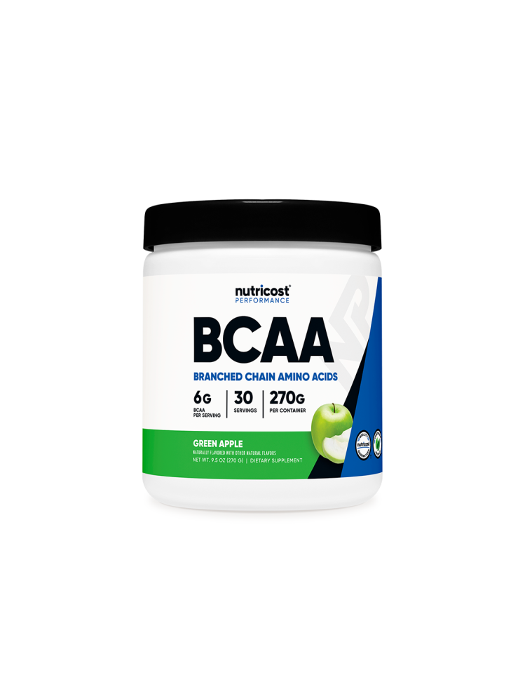

BCAA — Разклоненоверижни аминокиселини
BCAA (левцин, изолевцин, валин) са сред най-популярните аминокиселини. Те се усвояват директно от мускулите и спомагат за намаляване на мускулния катаболизъм.
Основни ефекти
- Намаляване на мускулната умора
- Подобряване на възстановяването
- Подпомагане на мускулния растеж
Кога да се приемат
5–10 грама BCAA преди или по време на тренировка могат да намалят разграждането на мускулите и да подобрят издръжливостта. За оптимални резултати комбинирай с пълноценен протеин или EAA комплекс.